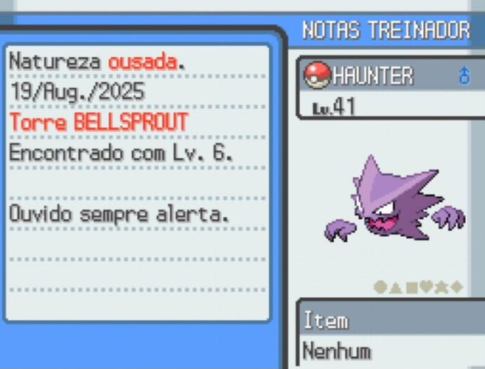

Pokémon fantasma conhecido por ser travesso e gostar de assustar as pessoas. Capturado no LV. 6 na Torre Bellsprout, após resolver o mistério dos fantasmas que assombravam o local.
Pokémon do tipo fantasma.